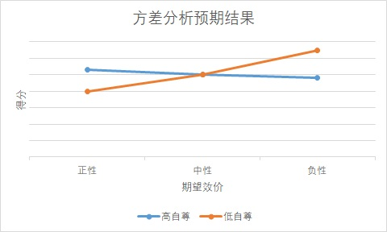

引言
基于前人的研究，现在已经发现了一个个体的自尊水平高低、他人对个体的期望等要素都会对于个体工作时的难以察觉的能力存在影响，比如工作记忆等等。本实验基于此，探究了在自尊高低水平的中介作用下，期望对于个体认知能力的影响。
方法
实验数据采取两种方式收集
在收集被试的自尊水平时，采用问卷调查的方式。问卷涉及了两个比较有效的自尊量表：罗森博格自尊量表，团体自尊量表。同时问卷涉及了人口学变量以及一些干扰项目和排查项目，以组织被试对实验目的的察觉，同时筛选有效的结果。
在实验阶段，给出不同的阅读材料，以影响被试的被期望水平。之后被试需要完成随机的stroop任务。在筛除明显存在偏差的数据后，被试的准确率以及平均反应时都会被作为因变量。
2（高自尊、低自尊）×3（期望效价：正性、中性、负性）两因素组间设计

分析方法及预期结果
1.问卷
排除所有心理学专业的问卷。当被试填写问题“对心理学了解程度”为“我是行家”“是相关从业者”、填写问题“了解罗森博格量表吗？”“了解集体自尊量表吗？”为“十分熟悉”时，剔除这些问卷。将罗森博格量表和集体自尊量表的结果整合为数据。
对于罗森博格量表：
下列问题中，“非常同意”记为2分，“同意”记为4分，“不同意”记为6分，“十分不同意”记为8分：< Q3：总的来说，我认为自己是一个失败者 Q5：我认为自己没有什么值得自豪的地方 Q8：我要是能更看得起自己就好了 Q9：有时我感觉自己非常没用 Q10：有时我觉得自己一无是处
而下列问题中，“非常同意”记为8分，“同意”记为6分，“不同意”记为4分，“非常不同意”记为2分： Q1：我认为自己是个很有价值的人，至少和别人不相上下 Q2：我觉得我有许多优点 Q4：我做事可以做的和大多数人一样好 Q6：我对自己吃有一种肯定的态度 Q7：整体而言，我对自己很满意
对于集体自尊量表：
下列问题中，“非常同意”记为1分，“同意”记为2分，“有点同意”记为3分，“一般”记为4分，“有点不同意”记为5分，“不同意”记为6分，“非常不同意”记为7分： Q11：我经常后悔考入这所大学 Q13：我总是觉得自己所属的这所大学没什么价值 Q17：多数人觉得我所属的大学比其他大学更低效 Q19：一般而言，别人觉得我的大学是不值得尊重的 Q21：我所属的这所大学反映了我是什么样的人 Q23：总的来说，其他人认为我所属的这书大学是好的 Q24：一般而言，属于这所大学是我的自我意象中的很重要的一部分
而下列问题中，“非常同意”记为7分，“同意”记为6分，“有点同意”记为5分，“一般”记为4分，“有点不同意”记为3分，“不同意”记为2分，“非常不同意”记为1分： Q12：我对自己能够成为该大学的成员感到骄傲 Q16：我对自己隶属的这所大学感觉良好 Q18：一般而言，其他人尊重我的大学 Q20：成为这所大学的一员几乎不会影响我对自己的感觉 Q21：我所属的这所大学对我是什么样的人一点也不重要
最终将所有问题的得分加和，得到“自尊指数”。很显然，得分越高，可以认为自尊水平也越高。将总得分低于76的被试定义为低自尊组；将总得分高于120的被试定义为高自尊组。
在实验阶段：首先将正确率低于70%和平均反应时低于0.6秒的被试都剔除。因为只要被试只按键判定不相符，就会有67%的正确率；正常人对strop的平均反应时约为0.84秒，只进行按键不判断时间约为0.24秒。因而过快的反应也意味着没有认真作答。
最终得分公式为： 得分=100*（准确率-0.67）-（反应时-0.24）*30
2.分析
以自尊、期望效价为因素,整合得分为因变量进行两因素方差分析
3.预期结果
自尊的主效应不显著期望效价主效应显著，负性组显著高于正性组与中性组自尊×期望效价交互作用显著，低自尊组个体负性期望条件下得分显著高于中性组与正性组，高自尊组个体不同期望效价条件下得分差异不显著
